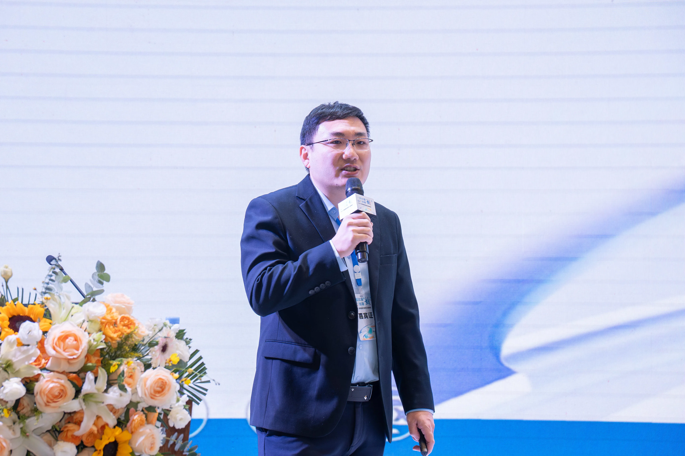

SALON-15
出海沙龙 · OUTBOUND SALON
赣州·企业出海 家具家居产业如何打开海外渠道
Ganzhou Salon: how furniture & home goods open overseas channels.
出海沙龙 共赴山海，洞见世界。2025，出海破局是大势所趋——不出海，便出局。

共赴山海，洞见世界。
2025，出海破局是大势所趋。在这时代浪潮下，每一个心怀壮志的人都深知：不出海，便出局。这不仅是一句警示，更是我们内心的呐喊。赣州的和君友人，此刻，诚邀您携手，共启出海新程。
- ▶ 3月19日 09:00-12:00 破局者茶叙
- ▶ 赣州市章贡区，报名后通知具体地点
届时将汇聚：
- √ 和君商学：江西省负责人，雷金文；
- √ 跨境出海领航：Vincent，和君商学十届校友，赣州市跨境电商协会秘书长，星驰海外仓供应链创始人；
- √ 短剧出海先锋：Tony，覆盖欧美、东南亚等全球五大洲的短剧生态操盘手，主导孵化现象级出海短剧，首创"IP跨境裂变+本地化编剧工坊"双轮驱动模式；
- √ 标杆技术透视：曾羿，赣州星羿晟科技有限公司总经理，阿里国际金牌讲师《千万级订单的秘籍》，2024年江西区域达人赛冠军，2024年中西部榜YOUNG大赛季军；
- √ 全球商贸先锋：Allen，加拿大多伦多大学毕业，深耕"智能清关+云仓联动"体系，布局RCEP区域跨境供应链；
- √ 实战资源沉淀：董立鑫，和君商学五届校友，十八届出海班主任，曾任德国企业高管，多年跨国公司业务实战分享与海外资源；
活动核心价值：
- ① 拆解数字赋能下的品牌出海路径
- ② 体验虚拟现实技术重塑的"中国智造"
- ③ 构建赣州跨境出海生态圈校友资源网络
既是思想盛宴，更是行动起点。期待与各位在虔城江共绘出海蓝图，见证中国品牌远征星辰大海。
活动报名链接：https://jsj.top/f/XWBECG
GTN 判断视角
赣州是家具家居产业带的重镇，供应链底子厚，但海外渠道与品牌认知是短板。把"产业带优势+跨境供应链+数字营销"打通，正是内陆制造城市出海破局的关键——海鑫汇愿做这条路径上的连接者与陪跑者。
本文内容整理自海鑫汇出海沙龙赣州专场记录。 查看公众号原文 →
想把"出海"从口号变成可执行的路径？先做一次免费首诊判断。
预约免费首诊 →